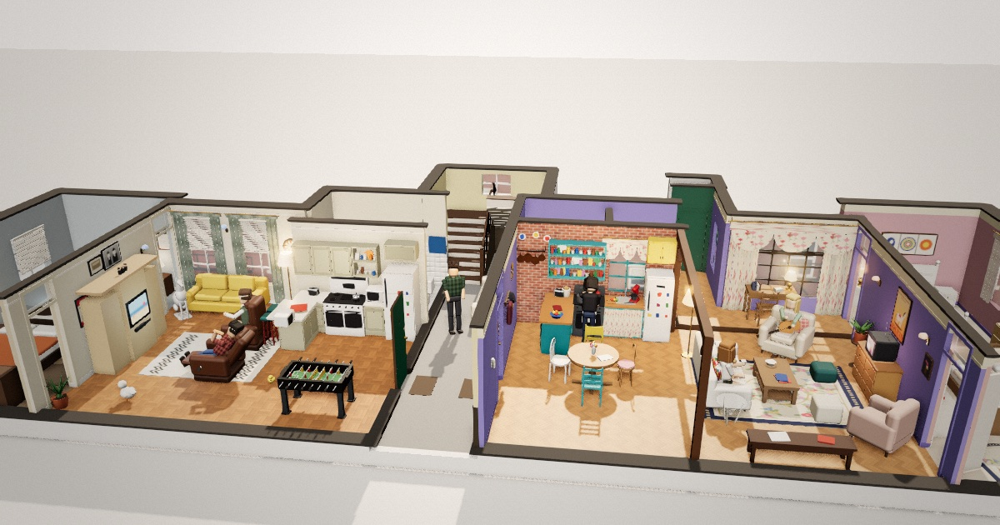
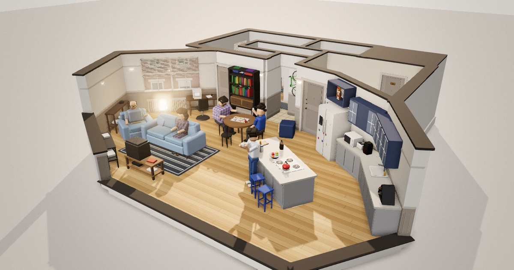
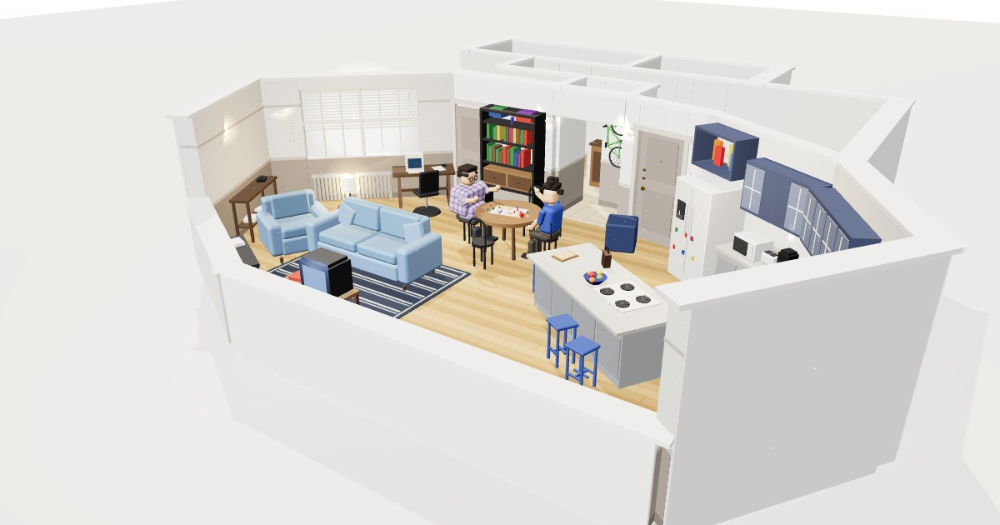

THE APARTMENTS
Sitcom apartments, built in 3D
-

Friends
Across the Hall
Monica’s apartment and Joey and Chandler’s, with the hall and the stairs between them. Ross’s new sofa and PIVOT!, the chick and the duck, noon to midnight light, the sound stage, a sitcom broadcast mode and a walk-through.
OPEN → -

Seinfeld · version 2
Jerry’s Apartment
The whole cast, Kramer’s entrance, noon to midnight light, the sound stage around the set, a sitcom broadcast mode and a walk-through.
OPEN → -

Seinfeld · version 1
Jerry’s Apartment
The first model: the room, Kramer and Newman at the Risk board, and the door he bursts through.
OPEN →